Candidate List 20260910Last night — ZTF: 2,683 passed basic cuts (102 young) · LSST: 0 passed basic cuts (0 young)Previous Day Next Day
Section 1: New Sources (age<1d) Section 2: Old (1-5d) sources observed last nightplaceholder
Section 1: New Afterglow/FBOT Cands Last Night (0)
Section 2: Older Sources Observed Last Night (8)
0. [ZTF] ZTF26abrvcge (FBOT?) [Back to Top] [Share] [Trigger Swift] [Fritz Alert] [Fritz Source] [Lasair]RA, Dec: 255.54671, 33.04468 17h 2m11.21s, 33d 2m40.85sGalactic (l, b): 55.52489, 36.22503 ext(g-r) = 0.025


TESS: Sectors [ 25 52 79 117 118]
SDSS (<15 kpc):Found SDSS phot-z: z=0.06; peak abs mag = -19.89
PS1: 0 sources in 3 arcsec
LegacySurvey: 1 sources in 3 arcsec Closest: d = 0.39 arcsec, 90.4 deg (east of north) photoz=0.04 (68% bounds 0.02, 0.06), type=EXP peak abs mag (ext. corrected) = -18.78 (68% bounds -17.87, -19.74)

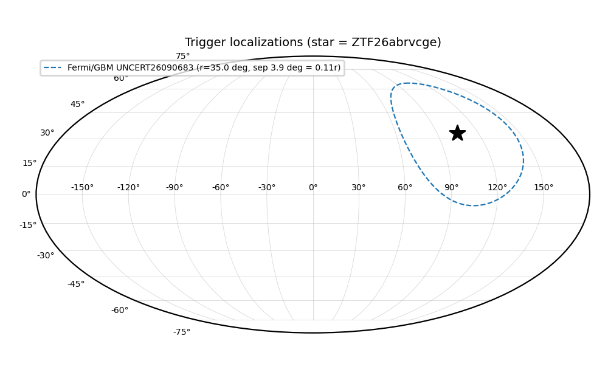
Extinction-corrected gr color:
From alerts: 0.02 +/- 0.07 mag
Consistent with synchrotron, g-r>0!
Rise Rate:
g: 0.19 mag/day
r: 0.43 mag/day
Fade Rate:
1. [ZTF] ZTF26abrzjia (Afterglow?FBOT?) [Back to Top] [Share] [Trigger Swift] [Fritz Alert] [Fritz Source] [Lasair]RA, Dec: 41.70543, -2.92394 2h46m49.30s, -2d-55m-26.20sGalactic (l, b): 176.66679, -53.30266 ext(g-r) = 0.042


TESS: Sectors 109
SDSS (<15 kpc):Found SDSS phot-z: z=0.11; peak abs mag = -19.75
PS1: 0 sources in 3 arcsec
LegacySurvey: 1 sources in 3 arcsec Closest: d = 0.50 arcsec, 149.9 deg (east of north) photoz=0.53 (68% bounds 0.27, 1.05), type=PSF peak abs mag (ext. corrected) = -23.69 (68% bounds -21.99, -25.5)

Extinction-corrected gr color:
From alerts: 0.14 +/- 0.23 mag
Consistent with synchrotron, g-r>0!
Rise Rate:
g: 0.14 mag/day
r: 1.02 mag/day
Fade Rate:
2. [ZTF] ZTF26absfire (FBOT?) [Back to Top] [Share] [Trigger Swift] [Fritz Alert] [Fritz Source] [Lasair]RA, Dec: 29.68195, 1.46075 1h58m43.67s, 1d27m38.70sGalactic (l, b): 155.15473, -57.14024 ext(g-r) = 0.026


TESS: Sectors [ 4 42 70 97]
SDSS (<15 kpc):Found SDSS phot-z: z=0.88; peak abs mag = -25.45
PS1: 0 sources in 3 arcsec
LegacySurvey: 1 sources in 3 arcsec Closest: d = 1.48 arcsec, 284.4 deg (east of north) photoz=0.13 (68% bounds 0.09, 0.17), type=REX peak abs mag (ext. corrected) = -20.68 (68% bounds -19.76, -21.32)

Extinction-corrected gr color:
From alerts: -0.13 +/- 0.17 mag
Extinction-corrected gi color:
From alerts: -0.2 +/- 0.23 mag
Extinction-corrected ri color:
From alerts: -0.07 +/- 0.21 mag
Consistent with synchrotron, g-r>0!
Rise Rate:
g: 0.28 mag/day
r: 0.27 mag/day
Fade Rate:
3. [ZTF] ZTF26absrrej (FBOT?) [Back to Top] [Share] [Trigger Swift] [Fritz Alert] [Fritz Source] [Lasair]RA, Dec: 38.04328, 23.91988 2h32m10.39s, 23d55m11.58sGalactic (l, b): 150.72249, -33.4588 ext(g-r) = 0.138


TESS: Sectors [18 42 43 44 58 70 71 85]
SDSS (<15 kpc):Found SDSS phot-z: z=0.29; peak abs mag = -21.13
PS1: 0 sources in 3 arcsec
LegacySurvey: 1 sources in 3 arcsec Closest: d = 0.56 arcsec, 188.7 deg (east of north) photoz=0.54 (68% bounds 0.3, 0.81), type=EXP peak abs mag (ext. corrected) = -22.75 (68% bounds -21.25, -23.81)

Extinction-corrected gr color:
From alerts: -0.1 +/- 0.18 mag
Extinction-corrected gi color:
From alerts: 1.58 +/- 99 mag
Extinction-corrected ri color:
From alerts: 1.06 +/- 99 mag
Consistent with synchrotron, g-r>0!
Rise Rate:
g: 0.26 mag/day
r: 0.16 mag/day
Fade Rate:
4. [ZTF] ZTF26absuypv (FBOT?) [Back to Top] [Share] [Trigger Swift] [Fritz Alert] [Fritz Source] [Lasair]RA, Dec: 241.05844, 41.00936 16h 4m14.03s, 41d 0m33.71sGalactic (l, b): 65.16121, 48.31844 ext(g-r) = 0.009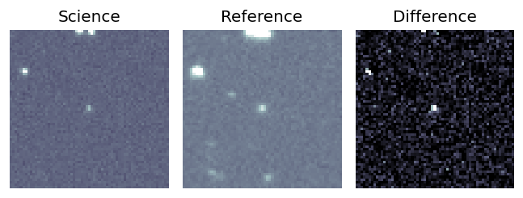
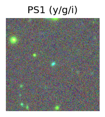
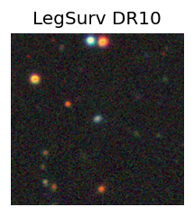
TESS: Sectors [ 24 25 50 51 78 117]
SDSS (<15 kpc):Found SDSS phot-z: z=0.19; peak abs mag = -20.28
PS1: 0 sources in 3 arcsec
LegacySurvey: 1 sources in 3 arcsec Closest: d = 0.05 arcsec, 307.5 deg (east of north) photoz=0.17 (68% bounds 0.14, 0.22), type=EXP peak abs mag (ext. corrected) = -20.05 (68% bounds -19.46, -20.64)
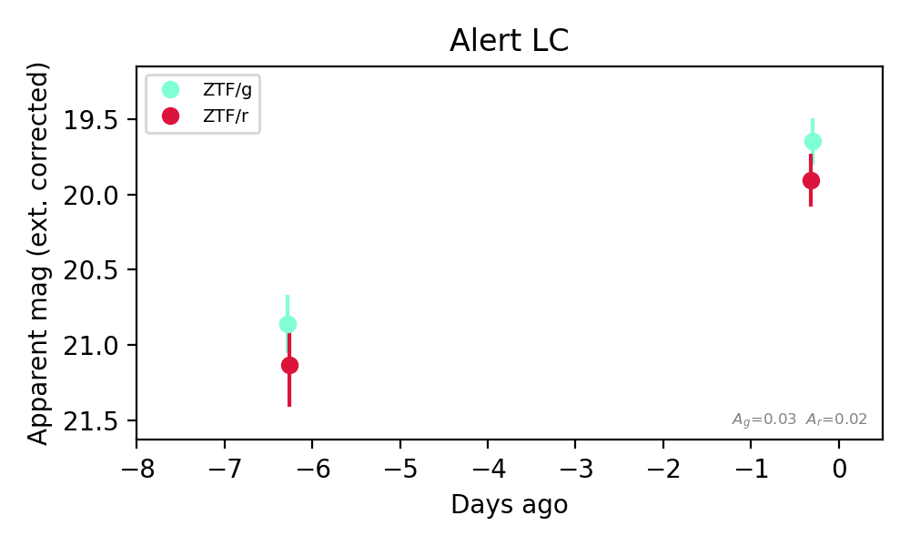
Extinction-corrected gr color:
From alerts: -0.26 +/- 0.23 mag
Rise Rate:
g: 0.2 mag/day
r: 0.21 mag/day
Fade Rate:
5. [ZTF] ZTF26absxhju (Afterglow?) [Back to Top] [Share] [Trigger Swift] [Fritz Alert] [Fritz Source] [Lasair]RA, Dec: 333.29578, -0.43923 22h13m10.99s, 0d-26m-21.21sGalactic (l, b): 61.35372, -43.59705 ext(g-r) = 0.095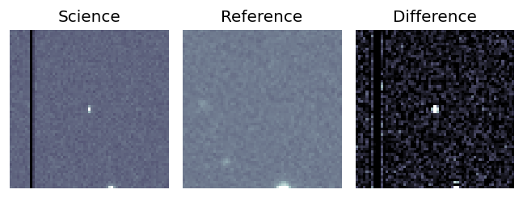
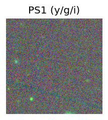
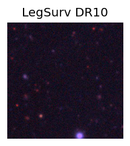
TESS: Sectors [42 55 82 92]
PS1: 0 sources in 3 arcsec
LegacySurvey: 1 sources in 3 arcsec Closest: d = 9.51 arcsec, 15.7 deg (east of north) photoz=0.67 (68% bounds 0.48, 1.28), type=REX peak abs mag (ext. corrected) = -24.8 (68% bounds -23.89, -26.51)
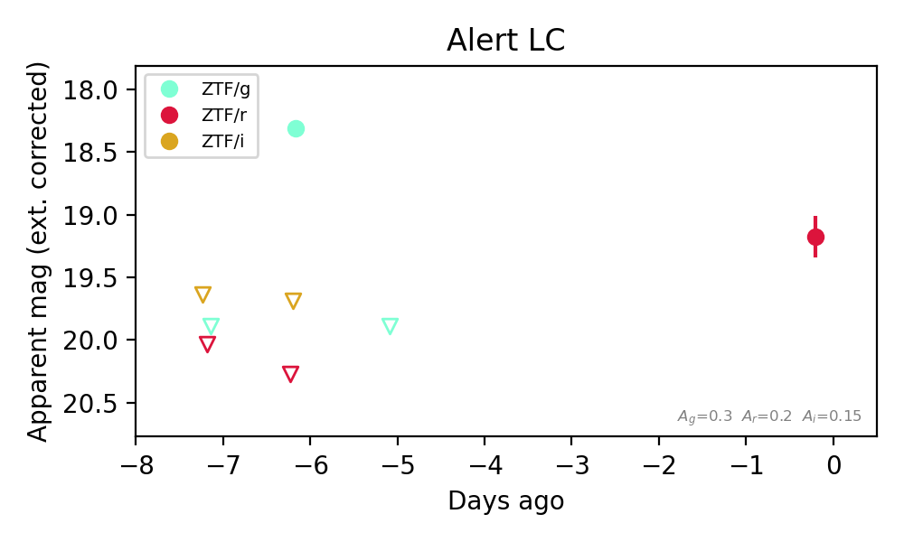
Extinction-corrected gr color:
From alerts: -1.96 +/- 99 mag
Extinction-corrected gi color:
From alerts: -1.38 +/- 99 mag
Rise Rate:
g: 1.61 mag/day
r: 0.18 mag/day
Fade Rate:
g: 1.47 mag/day
6. [ZTF] ZTF26absyacr (FBOT?) [Back to Top] [Share] [Trigger Swift] [Fritz Alert] [Fritz Source] [Lasair]RA, Dec: 344.07161, 23.60834 22h56m17.19s, 23d36m30.02sGalactic (l, b): 91.52137, -32.1473 ext(g-r) = 0.057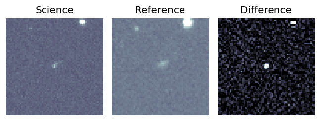
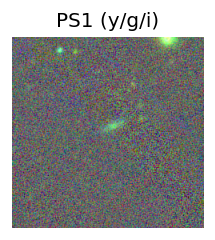
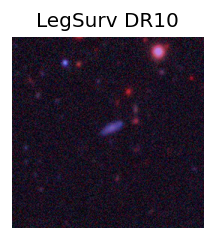
TESS: Sectors [56 83]
SDSS (<15 kpc):Found SDSS phot-z: z=0.14; peak abs mag = -19.38
PS1: 0 sources in 3 arcsec
LegacySurvey: 1 sources in 3 arcsec Closest: d = 1.66 arcsec, 101.9 deg (east of north) photoz=0.67 (68% bounds 0.34, 1.37), type=PSF peak abs mag (ext. corrected) = -23.25 (68% bounds -21.5, -25.16)
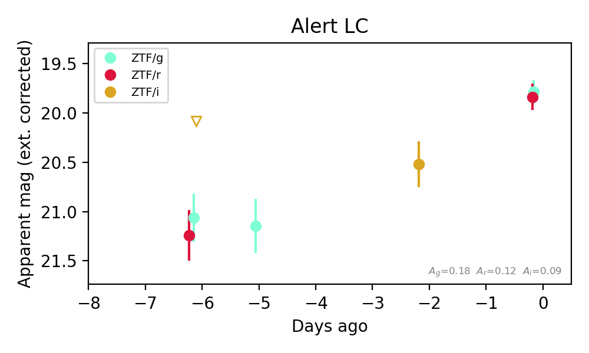
Extinction-corrected gr color:
From alerts: -0.05 +/- 0.18 mag
Extinction-corrected gi color:
From alerts: 0.98 +/- 99 mag
Extinction-corrected ri color:
From alerts: 1.15 +/- 99 mag
Consistent with synchrotron, g-r>0!
Rise Rate:
g: 0.23 mag/day
r: 0.23 mag/day
Fade Rate:
7. [ZTF] ZTF26absynrf (Afterglow?) [Back to Top] [Share] [Trigger Swift] [Fritz Alert] [Fritz Source] [Lasair]RA, Dec: 338.94347, 65.69323 22h35m46.43s, 65d41m35.64sGalactic (l, b): 109.56901, 6.40493 ext(g-r) = 1.863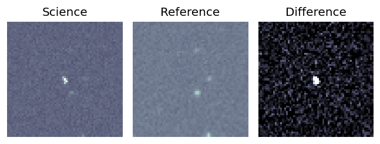
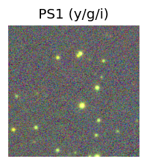

TESS: Sectors [17 18 24 57 58 77 78 84 85]
PS1: 1 source in 3 arcsec Closest: d = 7.86 arcsec photoz=0.95+/-0.12 peak abs mag = -31.04
LegacySurvey: 0 sources in 3 arcsec
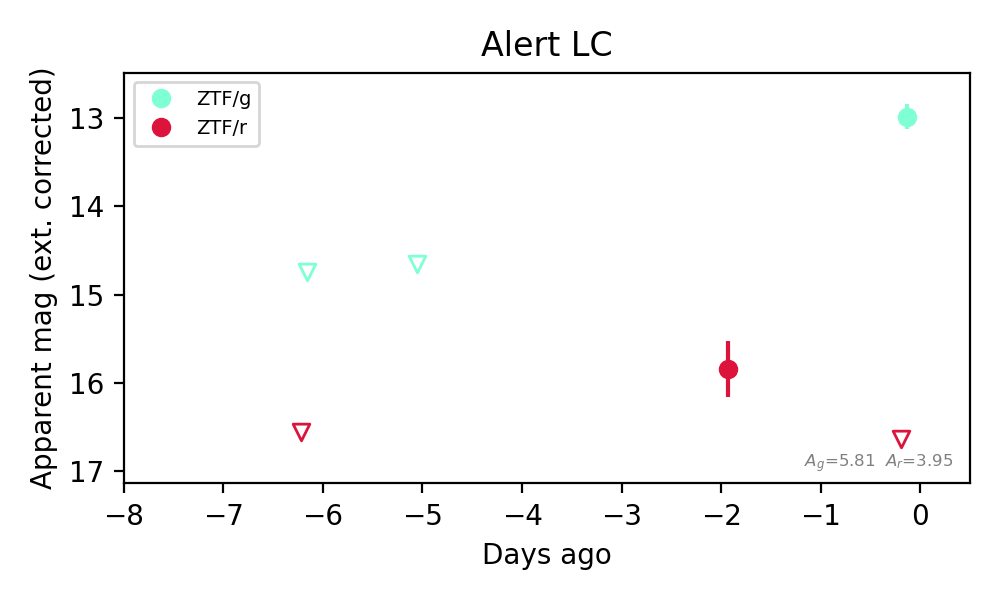
Extinction-corrected gr color:
From alerts: -3.65 +/- 99 mag
Rise Rate:
g: 0.34 mag/day
r: 0.17 mag/day
Fade Rate:
r: 0.46 mag/day